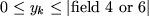

The RANGES indicator card is used to announce the definition of a vector of additional bounds on the artificial variables introduced in the GROUPS section (in the constrained case, this corresponds to saying that specified inequality constraints/rows have both lower and upper bounds). The syntax for data following this indicator card is given in Figure 3.12.
The string range-name in data field 2 gives the name of the vector of range values. This name may be up to ten characters long. More than one vector of range values may be defined.
The string $$$$$$$$$$ is used for two purposes.
In addition, the (optional) string group-name in data field 5 may also define the name of a group/row/constraint for which the range value is to be specified.
The string numerical-vl in data field 4 and (optionally) 6 now contains the numerical value of the relevant range value and may occupy up to 12 locations. Only groups initially specified with a G or L in columns 1 or 2 of field 1 in the GROUPS section use range values and therefore only these groups may be specified.
Range values for an array
of groups may also be defined on cards
on which field 1 is the character X or Z. On such cards,
the expanded array name
in field 3 and (as an option on X cards) 5
must be valid and the integer indices must have been defined in a
parameter assignment (see Section 3.2.3). On Z cards,
the range value
is that previously associated with the real parameter,
r-p-a-name, given in field 5. On X cards, the actual
numerical value numerical-vl may occupy up to 12 characters in
data fields 4 and (optionally) 6. Using the terminology of
Section 3.2.6, the extra bound
is taken to imply the inequality
 on the artificial variable
 .
.
Any component in a range vector not specified takes a default value. The default value for the components of each vector is initially infinite. This default may be changed using a card whose third field contains the string 'DEFAULT' as mentioned above. On such a card, the default value for the vector in field 2 is given in field 4 whenever field 1 is blank or contains the character X. If field 1 contains the character Z, the default value is that associated with the real parameter, rl-p-name, named in field 5. The default value applies to each range value not explicitly specified. If the default is to be changed, the change must be made on the first card naming a particular vector of range values.